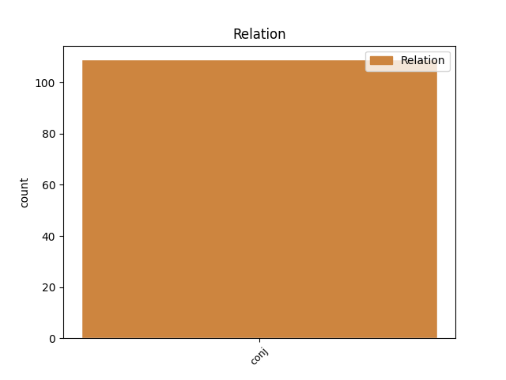

Distribution of features within this leaf


Agreement Rules sorted by frequency.
- When the dependent token is the conjunct(conj) of the head token, and the head token is AUX and the dependent token is AUX.
1 ՀՀԿ-ում _ _ _ _ 0 _ _ _
2 երեք _ _ _ _ 0 _ _ _
3 պայմանական _ _ _ _ 0 _ _ _
4 թիմ _ _ _ _ 0 _ _ _
5 է եմ AUX _ Aspect=Imp|Mood=Ind|Number=Sing|Person=3|Polarity=Pos|Tense=Pres|VerbForm=Fin 0 _ _ _
6 ձևավորվել _ _ _ _ 0 _ _ _
7 , _ _ _ _ 0 _ _ _
8 և _ _ _ _ 0 _ _ _
9 նրանց _ _ _ _ 0 _ _ _
10 միջև _ _ _ _ 0 _ _ _
11 պայքարը _ _ _ _ 0 _ _ _
12 կարող _ _ _ _ 0 _ _ _
13 է եմ AUX _ Aspect=Imp|Mood=Ind|Number=Sing|Person=3|Polarity=Pos|Tense=Pres|VerbForm=Fin 5 conj _ LTranslit=em|Translit=ē
14 ավելի _ _ _ _ 0 _ _ _
15 կոշտ _ _ _ _ 0 _ _ _
16 լինել _ _ _ _ 0 _ _ _
17 , _ _ _ _ 0 _ _ _
18 քան _ _ _ _ 0 _ _ _
19 ընդդիմության _ _ _ _ 0 _ _ _
20 և _ _ _ _ 0 _ _ _
21 իշխանության _ _ _ _ 0 _ _ _
22 միջև _ _ _ _ 0 _ _ _
23 : _ _ _ _ 0 _ _ _
1 Այդ _ _ _ _ 0 _ _ _
2 մեթոդների _ _ _ _ 0 _ _ _
3 դեմ _ _ _ _ 0 _ _ _
4 են եմ AUX _ Aspect=Imp|Mood=Ind|Number=Plur|Person=3|Polarity=Pos|Tense=Pres|VerbForm=Fin 0 _ _ _
5 դրվել _ _ _ _ 0 _ _ _
6 ժամանակակից _ _ _ _ 0 _ _ _
7 քաղտեխնոլոգիաները _ _ _ _ 0 _ _ _
8 , _ _ _ _ 0 _ _ _
9 և _ _ _ _ 0 _ _ _
10 կհաղթի հաղթել VERB _ Aspect=Prosp|Mood=Cnd|Number=Sing|Person=3|Polarity=Pos|Subcat=Tran|Tense=Pres|VerbForm=Fin|Voice=Act 4 conj _ LTranslit=haġt’el|Translit=khaġt’i
11 նա _ _ _ _ 0 _ _ _
12 , _ _ _ _ 0 _ _ _
13 ով _ _ _ _ 0 _ _ _
14 գումար _ _ _ _ 0 _ _ _
15 չի _ _ _ _ 0 _ _ _
16 խնայի _ _ _ _ 0 _ _ _
17 : _ _ _ _ 0 _ _ _
Disagree Examples:
1 Ակաթի _ _ _ _ 0 _ _ _
2 հայրն _ _ _ _ 0 _ _ _
3 աղջկա _ _ _ _ 0 _ _ _
4 փորը _ _ _ _ 0 _ _ _
5 կլորանալուց _ _ _ _ 0 _ _ _
6 հետո _ _ _ _ 0 _ _ _
7 նրանից _ _ _ _ 0 _ _ _
8 երես _ _ _ _ 0 _ _ _
9 էր եմ AUX _ Aspect=Imp|Mood=Ind|Number=Sing|Person=3|Polarity=Pos|Tense=Imp|VerbForm=Fin 0 _ _ _
10 թեքել _ _ _ _ 0 _ _ _
11 , _ _ _ _ 0 _ _ _
12 ոչ _ _ _ _ 0 _ _ _
13 տեսնել _ _ _ _ 0 _ _ _
14 էր _ _ _ _ 0 _ _ _
15 ուզում _ _ _ _ 0 _ _ _
16 , _ _ _ _ 0 _ _ _
17 ոչ _ _ _ _ 0 _ _ _
18 խոսել _ _ _ _ 0 _ _ _
19 , _ _ _ _ 0 _ _ _
20 իսկ _ _ _ _ 0 _ _ _
21 երբ _ _ _ _ 0 _ _ _
22 իմացավ _ _ _ _ 0 _ _ _
23 , _ _ _ _ 0 _ _ _
24 որ _ _ _ _ 0 _ _ _
25 աղջիկ _ _ _ _ 0 _ _ _
26 է _ _ _ _ 0 _ _ _
27 ծնվել _ _ _ _ 0 _ _ _
28 ՝ _ _ _ _ 0 _ _ _
29 « _ _ _ _ 0 _ _ _
30 իրա _ _ _ _ 0 _ _ _
31 նման _ _ _ _ 0 _ _ _
32 լիրբ _ _ _ _ 0 _ _ _
33 պիտի _ _ _ _ 0 _ _ _
34 լինի _ _ _ _ 0 _ _ _
35 , _ _ _ _ 0 _ _ _
36 էլի _ _ _ _ 0 _ _ _
37 » _ _ _ _ 0 _ _ _
38 ասաց ասել VERB _ Aspect=Perf|Mood=Ind|Number=Sing|Person=3|Polarity=Pos|Subcat=Tran|Tense=Past|VerbForm=Fin|Voice=Act 9 conj _ LTranslit=asel|SpaceAfter=No|Translit=asac’
39 , _ _ _ _ 0 _ _ _
40 ու _ _ _ _ 0 _ _ _
41 կնոջը _ _ _ _ 0 _ _ _
42 պատվիրեց _ _ _ _ 0 _ _ _
43 . _ _ _ _ 0 _ _ _
44 « _ _ _ _ 0 _ _ _
45 Մեր _ _ _ _ 0 _ _ _
46 տուն _ _ _ _ 0 _ _ _
47 էլ _ _ _ _ 0 _ _ _
48 չմտնի _ _ _ _ 0 _ _ _
49 , _ _ _ _ 0 _ _ _
50 բնակարան _ _ _ _ 0 _ _ _
51 վարձիր _ _ _ _ 0 _ _ _
52 , _ _ _ _ 0 _ _ _
53 թող _ _ _ _ 0 _ _ _
54 գնա _ _ _ _ 0 _ _ _
55 իր _ _ _ _ 0 _ _ _
56 համար _ _ _ _ 0 _ _ _
57 ոնց _ _ _ _ 0 _ _ _
58 ուզում _ _ _ _ 0 _ _ _
59 է _ _ _ _ 0 _ _ _
60 ապրի _ _ _ _ 0 _ _ _
61 » _ _ _ _ 0 _ _ _
62 , _ _ _ _ 0 _ _ _
63 — _ _ _ _ 0 _ _ _
64 ասաց _ _ _ _ 0 _ _ _
65 , _ _ _ _ 0 _ _ _
66 իսկ _ _ _ _ 0 _ _ _
67 մտքում _ _ _ _ 0 _ _ _
68 ՝ _ _ _ _ 0 _ _ _
69 « _ _ _ _ 0 _ _ _
70 Կապույտ _ _ _ _ 0 _ _ _
71 աղջիկ _ _ _ _ 0 _ _ _
72 , _ _ _ _ 0 _ _ _
73 ակաթի _ _ _ _ 0 _ _ _
74 ... _ _ _ _ 0 _ _ _
75 » _ _ _ _ 0 _ _ _
76 ։ _ _ _ _ 0 _ _ _
1 Իրենից _ _ _ _ 0 _ _ _
2 հետո _ _ _ _ 0 _ _ _
3 , _ _ _ _ 0 _ _ _
4 երկար _ _ _ _ 0 _ _ _
5 , _ _ _ _ 0 _ _ _
6 շատ _ _ _ _ 0 _ _ _
7 երկար _ _ _ _ 0 _ _ _
8 ման _ _ _ _ 0 _ _ _
9 էի եմ AUX _ Aspect=Imp|Mood=Ind|Number=Sing|Person=1|Polarity=Pos|Tense=Imp|VerbForm=Fin 0 _ _ _
10 գալիս _ _ _ _ 0 _ _ _
11 մեկին _ _ _ _ 0 _ _ _
12 , _ _ _ _ 0 _ _ _
13 որ _ _ _ _ 0 _ _ _
14 պատմեմ _ _ _ _ 0 _ _ _
15 իրական _ _ _ _ 0 _ _ _
16 կյանքիս _ _ _ _ 0 _ _ _
17 պատմությունը _ _ _ _ 0 _ _ _
18 , _ _ _ _ 0 _ _ _
19 ու _ _ _ _ 0 _ _ _
20 վերջը _ _ _ _ 0 _ _ _
21 գտա գտնել VERB _ Aspect=Perf|Mood=Ind|Number=Sing|Person=1|Polarity=Pos|Subcat=Tran|Tense=Past|VerbForm=Fin|Voice=Act 9 conj _ LTranslit=gtnel|SpaceAfter=No|Translit=gta
22 ։ _ _ _ _ 0 _ _ _
1 Ես _ _ _ _ 0 _ _ _
2 նրա _ _ _ _ 0 _ _ _
3 ասածները _ _ _ _ 0 _ _ _
4 չէի եմ AUX _ Aspect=Imp|Mood=Ind|Number=Sing|Person=1|Polarity=Neg|Tense=Imp|VerbForm=Fin 0 _ _ _
5 հասկանում _ _ _ _ 0 _ _ _
6 ու _ _ _ _ 0 _ _ _
7 երբեք _ _ _ _ 0 _ _ _
8 էլ _ _ _ _ 0 _ _ _
9 չեմ եմ AUX _ Aspect=Imp|Mood=Ind|Number=Sing|Person=1|Polarity=Neg|Tense=Pres|VerbForm=Fin 4 conj _ LTranslit=em|Translit=čem
10 հասկանա _ _ _ _ 0 _ _ _
11 , _ _ _ _ 0 _ _ _
12 բայց _ _ _ _ 0 _ _ _
13 օգտվեցի _ _ _ _ 0 _ _ _
14 գրառումներ _ _ _ _ 0 _ _ _
15 անելու _ _ _ _ 0 _ _ _
16 իր _ _ _ _ 0 _ _ _
17 սովորույթից _ _ _ _ 0 _ _ _
18 ու _ _ _ _ 0 _ _ _
19 պատմեցի _ _ _ _ 0 _ _ _
20 ՝ _ _ _ _ 0 _ _ _
21 ինչ _ _ _ _ 0 _ _ _
22 հիշում _ _ _ _ 0 _ _ _
23 էի _ _ _ _ 0 _ _ _
24 ու _ _ _ _ 0 _ _ _
25 ինչ _ _ _ _ 0 _ _ _
26 որ _ _ _ _ 0 _ _ _
27 կարևոր _ _ _ _ 0 _ _ _
28 էր _ _ _ _ 0 _ _ _
29 ինձ _ _ _ _ 0 _ _ _
30 համար _ _ _ _ 0 _ _ _
31 ՝ _ _ _ _ 0 _ _ _
32 սկզբից _ _ _ _ 0 _ _ _
33 մինչև _ _ _ _ 0 _ _ _
34 վերջ _ _ _ _ 0 _ _ _
35 ։ _ _ _ _ 0 _ _ _
1 Ես _ _ _ _ 0 _ _ _
2 նրա _ _ _ _ 0 _ _ _
3 ասածները _ _ _ _ 0 _ _ _
4 չէի _ _ _ _ 0 _ _ _
5 հասկանում _ _ _ _ 0 _ _ _
6 ու _ _ _ _ 0 _ _ _
7 երբեք _ _ _ _ 0 _ _ _
8 էլ _ _ _ _ 0 _ _ _
9 չեմ եմ AUX _ Aspect=Imp|Mood=Ind|Number=Sing|Person=1|Polarity=Neg|Tense=Pres|VerbForm=Fin 0 _ _ _
10 հասկանա _ _ _ _ 0 _ _ _
11 , _ _ _ _ 0 _ _ _
12 բայց _ _ _ _ 0 _ _ _
13 օգտվեցի օգտվել VERB _ Aspect=Perf|Mood=Ind|Number=Sing|Person=1|Polarity=Pos|Subcat=Intr|Tense=Past|VerbForm=Fin|Voice=Mid 9 conj _ LTranslit=ògtvel|Translit=ògtvec’i
14 գրառումներ _ _ _ _ 0 _ _ _
15 անելու _ _ _ _ 0 _ _ _
16 իր _ _ _ _ 0 _ _ _
17 սովորույթից _ _ _ _ 0 _ _ _
18 ու _ _ _ _ 0 _ _ _
19 պատմեցի _ _ _ _ 0 _ _ _
20 ՝ _ _ _ _ 0 _ _ _
21 ինչ _ _ _ _ 0 _ _ _
22 հիշում _ _ _ _ 0 _ _ _
23 էի _ _ _ _ 0 _ _ _
24 ու _ _ _ _ 0 _ _ _
25 ինչ _ _ _ _ 0 _ _ _
26 որ _ _ _ _ 0 _ _ _
27 կարևոր _ _ _ _ 0 _ _ _
28 էր _ _ _ _ 0 _ _ _
29 ինձ _ _ _ _ 0 _ _ _
30 համար _ _ _ _ 0 _ _ _
31 ՝ _ _ _ _ 0 _ _ _
32 սկզբից _ _ _ _ 0 _ _ _
33 մինչև _ _ _ _ 0 _ _ _
34 վերջ _ _ _ _ 0 _ _ _
35 ։ _ _ _ _ 0 _ _ _
1 Ես _ _ _ _ 0 _ _ _
2 ջերմեռանդ _ _ _ _ 0 _ _ _
3 հավատացյալ _ _ _ _ 0 _ _ _
4 չեմ _ _ _ _ 0 _ _ _
5 , _ _ _ _ 0 _ _ _
6 ու _ _ _ _ 0 _ _ _
7 Աբովյան _ _ _ _ 0 _ _ _
8 փողոցով _ _ _ _ 0 _ _ _
9 անցնելիս _ _ _ _ 0 _ _ _
10 չեմ եմ AUX _ Aspect=Imp|Mood=Ind|Number=Sing|Person=1|Polarity=Neg|Tense=Pres|VerbForm=Fin 0 _ _ _
11 խաչակնքվում _ _ _ _ 0 _ _ _
12 , _ _ _ _ 0 _ _ _
13 ինչպես _ _ _ _ 0 _ _ _
14 մեր _ _ _ _ 0 _ _ _
15 քաղաքի _ _ _ _ 0 _ _ _
16 քսան _ _ _ _ 0 _ _ _
17 տարեկան _ _ _ _ 0 _ _ _
18 տղաներն _ _ _ _ 0 _ _ _
19 ու _ _ _ _ 0 _ _ _
20 աղջիկները _ _ _ _ 0 _ _ _
21 , _ _ _ _ 0 _ _ _
22 բայց _ _ _ _ 0 _ _ _
23 հին _ _ _ _ 0 _ _ _
24 եկեղեցու _ _ _ _ 0 _ _ _
25 գմբեթին _ _ _ _ 0 _ _ _
26 նայում _ _ _ _ 0 _ _ _
27 էի եմ AUX _ Aspect=Imp|Mood=Ind|Number=Sing|Person=1|Polarity=Pos|Tense=Imp|VerbForm=Fin 10 conj _ LTranslit=em|Translit=ēi
28 ու _ _ _ _ 0 _ _ _
29 խաչի _ _ _ _ 0 _ _ _
30 զարդանախաշն _ _ _ _ 0 _ _ _
31 անգիր _ _ _ _ 0 _ _ _
32 գիտեմ _ _ _ _ 0 _ _ _
33 , _ _ _ _ 0 _ _ _
34 կարող _ _ _ _ 0 _ _ _
35 եմ _ _ _ _ 0 _ _ _
36 նկարագրել _ _ _ _ 0 _ _ _
37 : _ _ _ _ 0 _ _ _